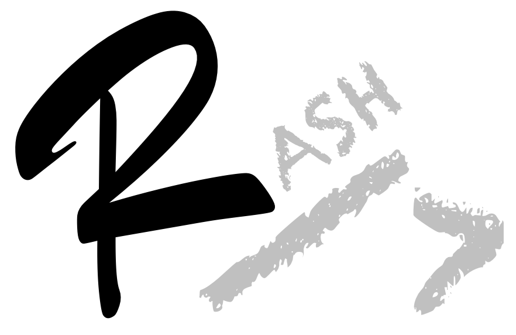
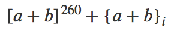

The current version of this document is licensed under a Creative Commons Attribution 4.0 International License. It documents the Research Articles in Simplified HTML (RASH) (version 0.5), i.e., a markup language defined as a subset of HTML+RDFa for writing scientific articles. A full example of a real research article written in RASH format is available online. In addition, a ZIP package containing this documentation, scripts, stylesheets and other exemplar files is available for downloading and use.
For any feedback please send me an email or use the tools in the official GitHub repository (github.com/essepuntato/rash).
This paper introduces the Research Articles in Simplified HTML (RASH) format , i.e., a markup language that restricts the use of HTML elements to only 31 elements for writing academic research articles. It is possible to includes also RDFa annotations within any element of the language, and also allows one to specify other RDF annotations in Turtle, RDF/XML and JSON-LD. In addition, RASH strictly follows the Digital Publishing WAI-ARIA Module 1.0 (which is currently an editor draft) for expressing structural semantics on various markup elements used.
Concerning its theoretical foundations, RASH is entirely based on a strong theory on structural patterns for XML documents . The systematic use of these structural patterns is an added value in all stages of the documents' lifecycle: they can be guidelines for creating well-engineered documents and vocabularies, rules to extract structural components from legacy documents, indicators to study to what extent documents share design principles and community guidelines.
Note that this is a meta-document, since it has been actually defined by using RASH itself as markup language. Thus you can easily access the HTML code of this page to understand how the various elements are rendered by the browser.
Any RASH documents begins as a simple (X)HTML5 document, by specifying the XML declaration and generic DOCTYPE followed by document element html with the usual namespace and with additional (and mandatory) prefix declarations (through the attribute prefix). The element html contains the element head, for defining metadata of the document, and the element body, for including the whole content of the document. The whole structure of a RASH document is then introduced as follows:
<?xml version="1.0" encoding="UTF-8"?>
<!DOCTYPE html>
<html
xmlns="http://www.w3.org/1999/xhtml"
prefix="
schema: http://schema.org/
prism: http://prismstandard.org/namespaces/basic/2.0/">
<head>
<-- Metadata about the document -->
</head>
<body>
<-- Content of the document -->
</body>
</html>This document presents which elements are specifiable in each of the two document blocks, i.e., metadata and content. In we explain how to specify the metadata of the article as appropriate elements within head, while the rest of the document mainly pertains elements within the element body. In particular:
in we introduce all the elements responsible for the definition of the actual text of documents, i.e, paragraphs and inlines;
in we present the hierarchical structures for organising the text, e.g., the sections;
in we show how to create boxes with figures, tables, formulas, and listings;
in we introduce how to define the bibliographic reference of a paper;
in we explain how to create references to all the other objects defined with an article, for instance in-text reference pointers, footnote pointers, etc.;
in we present how to add RDF annotations and even comma-separated value data on the papers in RASH format.
Finally, in we discuss how RASH files are actually rendered by the browser, by means of using external libraries, i.e., Bootstrap, JQuery, and MathJax.
The element head of a RASH document must include some elements, i.e., the paper title and at least one author, while the other elements are left as optional.
We can specify the title of the paper by using the element title, as shown in the following excerpt.
<title>Title of the paper</title>In addition subtitles can be specified as well, by adding the characters --
and the subtitle text after the text of the main title, as shown in the next excerpt.
<title>Title of the paper -- subtitle of the paper</title>All the affiliation used by the authors (introduced in ) must be defined through an appropriate element meta having:
the attribute about set to the same identifier used by the author's metadata for referring to the particular affiliation;
the attribute property set to schema:name
;
the attribute content set to the actual name of the affiliation, where the various units of the affiliation (e.g., research group, department, institution, city, country) must be separated by a comma.
An example of how to create an affiliation is shown in the following excerpt.
<!-- Affiliations (one or more) -->
<meta
about="#cs-unibo" property="schema:name"
content="Department of Computer Science and Engineering,
University of Bologna, Bologna, Italy" />In addition to the aforementioned data, it is possible to use meta elements to specify other article-related data, such as the ACM subject categories and free text keyword. In particular:
an element meta must be used for each of the ACM subject categories to specify, with the attribute name set to dcterms.subject
and the attribute content containing a comma-separated list of categories (from the most generic to the most concrete);
an element meta must be used for each of the keywords to specify, with the attribute property set to prism:keyword
and the attribute content containing a the string defining the keyword.
An example of how to create all these information is shown in the following excerpt.
<!-- Paper keywords (one or more) -->
<meta property="prism:keyword" content="markup language" />
<meta property="prism:keyword" content="HTML" />
<!-- ACM category (one or more) -->
<meta name="dcterms.subject"
content="I.7.2,Document And Text Processing,
Document Capture,Document analysis" />The textual elements for describing the content of the paper can be split in two main categories. On the one hand, there are those that allow us to organise the content of a document in textual blocks, i.e., the paragraphs and other elements containing text. On the other hand, there are elements that allow us to associate particular functions to portions of text, i.e., the inline elements.
First of all, there are the paragraphs, i.e., a self-contained unit of a discourse in writing dealing with a particular point or idea
. A paragraph is the simplest block structure containing text and, among the blocks, the only kind of element in the body where you can use the text.
There exist three different kinds of paragraphs: normal (as this one), paragraphs containing codes (as those used in ) and paragraphs with quotes.
The common paragraphs are described by the element p, as used as follows.
<p>This is the text forming a paragraph</p>All the block of codes, such as the latest block in , can be defined by using the element pre plus the element code, as shown as follows:
<pre><code>
<p>This is the text forming a paragraph</p>
</code></pre>The list are self-contained blocks that must be used outside paragraphs and that allow us to structure test as a sequence of item. The elements for defining lists are ul (for unordered lists) and ol (for ordered lists).
Each list element can contain only li elements, i.e., list items; the latter ones cannot contain text directly, but can contain other blocks (see ) and sections (see ).
An example of these two kinds of list is shown in the following excerpt.
<!-- An unordered list -->
<ul>
<li>
<p>A list item of an unordered list containing a paragraph.</p>
</li>
<li>
<p>Another item.</p>
<p>Containing two paragraphs.</p>
</li>
</ul>
<!-- An ordered list -->
<ol>
<li><p>A list item of an ordered list.</p></li>
</ol>It is possible to also describe blocks of quotations by using the element blockquote containing some other block elements such as paragraphs, lists, and code blocks:
This is a block quotation.
The source code of the above paragraph is shown as follows:
<blockquote><p>This is a block quotation.</p></blockquote>In addition to blocks, it is possible to describe small parts of a text with inline elements defining particular functions on such text, such as emphasis, inline quotation, super- and sub- scripts, and the like.
We can use two different kinds of emphases, the normal one and the strong one, created by using the elements em and strong respectively. Inline quotations, e.g., Alice was beginning to get very tired of sitting by her sister on the bank
, are possible by using the element q, while superscripts and subscripts are described by the elements sup and sub respectively. In addition, it is possible to describe a piece of text as an inline source code by using the element code.
The element span is very useful for associating neutral classes to part of the text and for pushing RDFa annotations (see for more details).
It is also possible to insert images as part of the text inside a paragraph. There are two ways for specify images in the document. The first one is to use the element img with the attribute src set to the URL of the image – and the attribute alt for providing an alternative description of the image. Alternatively, it is possible to use also the element svg compliant with the SVG specification, such as the following circle: . In this case, the SVG namespace (i.e., http://www.w3.org/2000/svg) must be explicitly specified.
Mathematical formulas can be specified as well, by means of three different elements. First of all, we can use the whole MathML specification (i.e., the element math of namespace http://www.w3.org/1998/Math/MathML) for defining well-formed formulas like
. In addition, one can specify formulas through an image, by using the element img with the attribute role set to math
, and specifying the formula through the attribute src, remembering to use the attribute alt for providing an alternative description of it. It is also possible to create formulas by means of the LaTeX syntax, by using the element span with the attribute role specified to math
, e.g., \pi r^2.
Finally, the usual element a, accompanied by the attribute href, is used for defining hyperlinks to external pages.
In the following excerpt, we summarise the use of all these elements.
<p>
The text contained in this paragraph is annotated with markup for
inline elements. In particular we have <em>normal</m> and
<strong>strong</strong> emphasis, <q>quotations</q>,
<sup>superscripts</sup> and <sub>subscripts</sub>,
<code>source code</code> and
<a href="https://en.wikipedia.org/wiki/Hyperlink">hyperlinks</a>.
In addition to pure textual elements, we can also add images,
like <img src="logo.svg" alt="Picture with a logo" />, or
<svg xmlns="http://www.w3.org/2000/svg" width="16" height="16">
<circle cx="8" cy="8" r="7" stroke="green" stroke-width="1"
fill="yellow" /></svg>.
Formulas can be specified by using the MathML specification, like
<math xmlns="http://www.w3.org/1998/Math/MathML">
<mi>π<!-- π --></mi>
<mo>⁢<!-- ⁢ --></mo>
<msup>
<mi>r</mi>
<mn>2</mn>
</msup>
</math>, by means of an image such as
<img role="math" src="formula.png" alt="r^2" />, or by using
LaTeX, e.g., <span role="math">\pi r^2</span>.
</p>Sections are pure structural constructs that cannot contain text directly and allow one to organise the various textual blocks of a document according to appropriate hierarchies. Any section is defined by using the element section. In addition, it must contain an header (element h1) as first child and at least another block element containing text, i.e., a paragraph, a list, a blockquote, a code block or any of the structures described in . The following excerpt shows how to create a section in RASH.
<section>
<h1>Title of the section</h1>
<p>The first paragraph of the section</p>
</section>Similarly, it is possible to create subsection by simply nesting sections as children of an existing one. For instance, the following excerpt introduces these kinds of scenarios.
<section>
<h1>Title of the section</h1>
<p>The first paragraph of the main section</p>
<section>
<h1>The title of the subsection</h1>
<p>The first paragraph of the subsection.</p>
</section>
</section>In RASH it is possible to define special sections that carry a particular semantics such as acknowledgements (attribute role set to doc-acknowledgements
), the references section (attribute role set to doc-bibliography
) and the abstract (attribute role set to doc-abstract
).
In a scientific article, figures, tables and formulas as usually contained within appropriate boxes (some accompanied by a caption) that allow one to refer to such items easily within the text. In RASH, all these boxes are defined by the element figure.
We can define a figure box containing an image with a caption by using the element figure with an element p that can contain one of the following inline elements (see for more details):
an element img;
an element svg (with namespace http://www.w3.org/2000/svg).

img.
svg.Each figure box should have the attribute id set to some value in order to be referenced and must contain the element figcaption for defining the caption of the figure. For instance the figures shown in and are defined in RASH through the following code.
<figure id="figure_1">
<p>
<img src="img/rash.png" alt="The RASH logo!"/>
</p>
<figcaption>
Caption of the figure inserted through the element
<code>img</code>.
</figcaption>
</figure>
<figure id="figure_2">
<p>
<svg xmlns="http://www.w3.org/2000/svg"
xmlns:xlink="http://www.w3.org/1999/xlink"
width="540" height="200" viewBox="0 0 270 100">
<defs>
<radialGradient id="radial"
cx="50%" cy="50%" fx="25%" fy="25%">
<stop offset="0%" stop-color="#60bafc" />
<stop offset="50%" stop-color="#409adc" />
<stop offset="100%" stop-color="#005a9c" />
</radialGradient>
<path id="curve" d="M18,60 C100,10 180,110 264,60"
fill="none"/>
</defs>
<circle cx="138" cy="50" r="38"
fill="url(#radial)" stroke="#005a9c" />
<text font-family="Verdana" font-size="20"
fill="#ff9900">
<textPath xlink:href="#curve"
method="stretch" style="visibility: visible;">
Scalable
<tspan fill="white">Vector</tspan> Graphics
</textPath>
</text>
</svg>
</p>
<figcaption>
Caption of the figure inserted through the element
<code>svg</code>.
</figcaption>
</figure>We can define a table box containing a table with a caption by using the element figure containing an element table with the attribute id set to some value in order to refer to this item.
| Heading cell 1 | Heading cell 2 |
|---|---|
Data cell 1 |
Data cell 2 |
|
Data cell 3 With multiple paragraphs |
Data cell 4 |
Each table box is composed by two distinct and mandatory elements:
table, which must contain at least one table row (i.e., the element tr) composed by one or more table cells, that can be
figcaption that defines a caption for the table.
For instance the table shown in is defined in RASH through the following code.
<figure id="table_1">
<table>
<tr>
<th>Heading cell 1</th>
<th>Heading cell 2</th>
</tr>
<tr>
<td><p>Data cell 1</p></td>
<td><p>Data cell 2</p></td>
</tr>
<tr>
<td>
<p>Data cell 3</p>
<p>With multiple paragraphs</p>
</td>
<td><p>Data cell 4</p></td>
</tr>
</table>
<figcaption>Caption of the table.</figcaption>
</figure>We can define a formula box containing a formula by using the element figure with an element p that can contain either an element img, an element math, or an element span, and the attribute id set to some value in order to refer to this item.

[a + b]^{260} + \{a + b\}_i
Each formula box is composed by a mandatory element p that can contain a formula by means of:
an element math (with namespace http://www.w3.org/1998/Math/MathML) of the MathML specification as introduced in .
For instance the formulas shown in , , and are defined in RASH through the following code.
<!-- Formula defined as an image -->
<figure id="formula_1">
<p>
<img role="math" src="formula.png" alt="[a+b]^{260}+{a+b}_i"/>
</p>
</figure>
<!-- Formula defined using the MathML specification -->
<figure id="formula_2">
<p>
<math xmlns="http://www.w3.org/1998/Math/MathML">
<mrow>
<msup>
<mfenced open="[" close="]">
<mrow>
<mi>a</mi>
<mo>+</mo>
<mi>b</mi>
</mrow>
</mfenced>
<mn>260</mn>
</msup>
<mo>+</mo>
<msub>
<mfenced open="{" close="}">
<mrow>
<mi>a</mi>
<mo>+</mo>
<mi>b</mi>
</mrow>
</mfenced>
<mi>i</mi>
</msub>
</mrow>
</math>
</p>
</figure>
<!-- Formula defined through LaTeX -->
<figure id="formula_3">
<p>
<span role="math">[a + b]^{260} + \{a + b\}_i</span>
</p>
</figure>We can define a listing box containing a code excerpt with a caption by using the element figure containing the element pre, and with the attribute id set to some value in order to refer to this item.
<define name="listingbox">
<element name="figure">
<ref name="attributes_html_element_no_role" />
<ref name="pre" />
<ref name="caption" />
</element>
</define>The element pre must contain the content of the listing in an element code, as introduced in . In addition, a mandatory element figcaption must be specified and defines a caption for the listing. For instance the listing shown in is defined in RASH through the following code.
<figure id="listing_1">
<pre><code>
<define name="listingbox">
<element name="figure">
<ref name="attributes_html_element_no_role" />
<ref name="pre" />
<ref name="caption" />
</element>
</define>
</pre></code>
<figcaption>Caption of the figure.</figcaption>
</figure>All the references are organised in a list within a special section defined by using the element section with the attribute role set to doc-bibliography
. They are usually put at the end of the document before the footnotes section (cf. ).
This special section must have an heading (element h1) and only one list (cf. ) containing a bibliographic reference for each list item (i.e., the element li accompanied by the attribute id for referencing to it within the text and the attribute role set to doc-biblioentry
).
For instance, the reference section in is defined in RASH through the following code.
<section id="bibreflist" role="doc-bibliography">
<h1>References</h1>
<ol>
<li id="Per2014" role="doc-biblioentry">
<p>
Peroni, S. (2014). Research Articles in Simplified HTML
(RASH).
<a href="http://cs.unibo.it/save-sd/rush.rng">
http://cs.unibo.it/save-sd/rush/rush.rng</a>
</p>
</li>
<li id="ParagraphWikipedia" role="doc-biblioentry">
<p>
Wikipedia entry <q>Paragraph</q>.
<a href="https://en.wikipedia.org/wiki/Paragraph">
https://en.wikipedia.org/wiki/Paragraph</a>
(last visited, December 17, 2014).
</p>
</li>
<li id="CDN2014" role="doc-biblioentry">
<p>
Ciancarini, P., Di Iorio, A., Nuzzolese, A. G.,
Peroni, S., Vitali, F. (2014). Evaluating citation
functions in CiTO: cognitive issues. In Presutti, V.,
d'Amato, C., Gandon, F., d'Aquin, M., Staab, S.,
Tordai, A. (Eds.), Proceedings of the 11th Extended
Semantic Web Conference (ESWC 2014), Lecture Notes
in Computer Science 8465: 580-594. Berlin, Germany:
Springer. <a
href="http://dx.doi.org/10.1007/978-3-319-07443-6_39">
http://dx.doi.org/10.1007/978-3-319-07443-6_39</a>
</p>
</li>
</ol>
</section>All the footnotes is a special section defined by using the element section with the attribute role set to doc-footnotes
. They are usually put at the end of the document after the reference section (cf. ).
This special section contains a sequence of elements section. Each of these elements is accompanied by the attribute role with value doc-footnote
, by the attribute id (for referencing to the particular footnote within the text), and can contain block elements containing text, i.e., a paragraph, a list, a code block, a block quotation or any of the structures described in .
For instance, the footnote section in is defined in RASH through the following code.
<section id="fnlist" role="doc-footnotes">
<section role="doc-footnote" id="fn1">
<p>This is the text of a footnote.</p>
</section>
<section role="doc-footnote" id="fn2">
<p>This is the text of another footnote.</p>
</section>
...
</section>
All the sections (e.g., ), figures (e.g., ), tables (e.g., ), formulas (e.g., ), listings (e.g., ), bibliographic references (e.g., ), footnotes (e.g., ) and even multiple footnotes (e.g., , that will be automatically separated through a ,
) can be referenced within the text by using the empty element a. It must have the attribute href pointing to an element id of the document (preceded by the character #
).
For instance, the reference pointers introduced in the above paragraph are defined in RASH through the following code.
<p>
All the sections (e.g., <a href="#sections"></a>),
figures (e.g., <a href="#figure_1"></a>), tables (e.g.,
<a href="#table_1"></a>), formulas (e.g.,
<a href="#formula_1"></a>), bibliographic references
(e.g., <a href="#Per2014"></a>), footnotes
(e.g., <a href="#fn3"></a>) and even multiple
footnotes (e.g., <a href="#fn5"></a>
<a href="#fn4"></a>, that will be
automatically separated through a <q><sup>,</sup></q>)
can be referenced within the text by using the <b>empty</b>
element <code>a<code>.
</p>RASH has been developed in order to allow anyone to add RDFa annotations to any element of the document. For instance, we have injected the following triples (in Turtle) within the above paragraph.
@prefix cito: <http://purl.org/spar/cito/> .
<> cito:credits <http://www.w3.org/TR/rdfa-syntax/> .That was possible by adding RDFa annotations by using the appropriate attribute within the paragraph content, while the prefixes were defined in the element html, as shown in the following excerpt.
<html prefix="cito: http://purl.org/spar/cito/">
...
<p>
RASH has been developed in order to allow anyone to add
<a
property="cito:credits"
href="http://www.w3.org/TR/rdfa-syntax/">RDFa</a>
annotations to any element of the document.
</p>
...
</html>
For a complete introduction of RDFa within HTML documents, please read the official documentation .
In addition to RDFa, RASH makes available another way to add RDF statements to the document, i.e., the use of an element script (within the element head):
with the attribute type set to text/turtle
for adding plain Turtle content;
with the attribute type set to application/ld+json
for adding plain JSON-LD content;
with the attribute type set to application/rdf+xml
for adding plain RDF/XML content.
An example of use of such element for Turtle and JSON-LD statements in introduced in the following excerpt.
<script type="text/turtle">
@prefix pro: <http://purl.org/spar/pro/> .
@prefix foaf: <http://xmlns.com/foaf/0.1/> .
<#sp> a foaf:Person ;
foaf:givenName "Silvio" ;
foaf:familyName "Peroni" ;
foaf:homepage <http://www.essepuntato.it> ;
pro:holdsRoleInTime [
a pro:RoleInTime ;
pro:withRole pro:author ;
pro:relatesToDocument <>
] .
</script>
<script type="application/ld+json">
{
"@context":
{
"nick": "http://xmlns.com/foaf/0.1/nick"
},
"@id": "#sp",
"nick": ["S.", "essepuntato"]
}
</script>
For a complete introduction of Turtle , JSON-LD and RDF/XML please read the official documentation.
Finally, it is also possible to specify comma-separated values within the element script by specifying text/csv
as value of the attribute type.
The whole visualisation of this document (as any other RASH document) is rendered by the browser in the current form by means of appropriate CSS3 stylesheets and javascript scripts developed for this purpose. We are actually some external libraries, i.e., Bootstrap and JQuery, in order to guarantee this clear visualisation and for adding additional tools to the user – such as the footbar with statistics about the paper (i.e., number of words, figures, tables and formulas) and with a menu to change the actual layout of the page (the layouts currently available are: Web-based and Springer's Lecture Note in Computer Science), the automatic reordering of footnotes and references, the visualisation of the metadata of the paper, etc.
In order to permit a correct visualisation of RASH documents, it is needed to add few line of HTML code at the very beginning of the document, within the element head, as shown in the following excerpt.
<!-- Visualisation requirements (mandatory for optimal reading) -->
<meta charset="UTF-8" />
<meta name="viewport" content="width=device-width, initial-scale=1" />
<link href="bootstrap.min.css" rel="stylesheet" />
<link rel="stylesheet" href="rash.css" />
<script src="jquery.min.js"> </script>
<script src="bootstrap.min.js"> </script>
<script src="rash.js"> </script>
<!-- MathJax for multi-browser support of LaTeX formulas and MathML -->
<script src="https://cdn.mathjax.org/mathjax/latest/MathJax.js?config=TeX-AMS-MML_HTMLorMML"> </script>
<!-- /END Visualisation requirements (mandatory for optimal reading) -->Note that the RASH file you are writing must be placed in the same location where the aforementioned scripts and stylesheets are. We have made available a ZIP package containing all these files with this documentation and a full example of a real research article written in RASH format.
In addition to these Javascript files, we also suggest the use of MathJax, which is a Javascript display engine for mathematics that works in all browsers. It is used for rendering particular elements used in RASH, i.e., MathML formulas (by means of the element math) as well as LaTeX formulas (through the element span with the attribute role set to math
), as shown in . Please note that the use of MathJax as introduced in the excerpt above is guaranteed only if there is internet connection. However, for offline rendering, one should store the whole MathJax package locally and should refer to it by means of a relative path, as shown in the following excerpt.
<script
src="[local-dir]/MathJax.js?config=TeX-AMS-MML_HTMLorMML"> </script>
The acknowledgements of a document are organised in a special section defined by using the element section with the attribute role set to doc-acknowledgements
. They are usually put just after the section concluding the document (i.e., in this case) and before the reference section.
Peroni, S. (2014). Research Articles in Simplified HTML (RASH). http://cs.unibo.it/save-sd/rush/rush.rng
Wikipedia entry Paragraph
. https://en.wikipedia.org/wiki/Paragraph (last visited, December 17, 2014).
Ciancarini, P., Di Iorio, A., Nuzzolese, A. G., Peroni, S., Vitali, F. (2014). Evaluating citation functions in CiTO: cognitive issues. In Presutti, V., d'Amato, C., Gandon, F., d'Aquin, M., Staab, S., Tordai, A. (Eds.), Proceedings of the 11th Extended Semantic Web Conference (ESWC 2014), Lecture Notes in Computer Science 8465: 580-594. Berlin, Germany: Springer. http://dx.doi.org/10.1007/978-3-319-07443-6_39
Sporny, M. (2013). HTML+RDFa 1.1: Support for RDFa in HTML4 and HTML5. W3C Recommendation, 22 August 2013. World Wide Web Consortium. Retrieved from http://www.w3.org/TR/rdfa-in-html/
Prud'hommeaux, E., Carothers, G. (2014). RDF 1.1 Turtle: Terse RDF Triple Language. W3C Recommendation, 25 February 2014. World Wide Web Consortium. Retrieved from http://www.w3.org/TR/turtle/
Sporny, M., Kellogg, G., Lanthaler, M. (2014). JSON-LD 1.0 - A JSON-based Serialization for Linked Data. W3C Recommendation, 16 January 2014. World Wide Web Consortium. Retrieved from http://www.w3.org/TR/json-ld/
Gandon, F., Schreiber, G. (2014). RDF 1.1 XML Syntax. W3C Recommendation, 25 February 2014. World Wide Web Consortium. Retrieved from http://www.w3.org/TR/rdf-syntax-grammar/
Di Iorio, A., Nuzzolese, A. G., Osborne, F., Peroni, S., Poggi, F., Smith, M., Vitali, F. Zhao, J. (2015). The RASH Framework: enabling HTML+RDF submissions in scholarly venues. In Proceedings of the poster and demo session of the 14th International Semantic Web Conference (ISWC 2015). Retrieved from https://rawgit.com/essepuntato/rash/master/papers/rash-demo-iswc2015.html
Di Iorio, A., Peroni, S., Poggi, F., & Vitali, F. (2014). Dealing with structural patterns of XML documents. Journal of the American Society for Information Science and Technology, 65(9): 1884–1900. http://dx.doi.org/10.1002/asi.23088
Note that other elements should be added for visualisation purposes. Please refer to for additional details.
Note that h1 has the same content model of the element p, which means that all the inline elements described in can be used within such element.
The full support of MathML is guaranteed by means of MathJax.